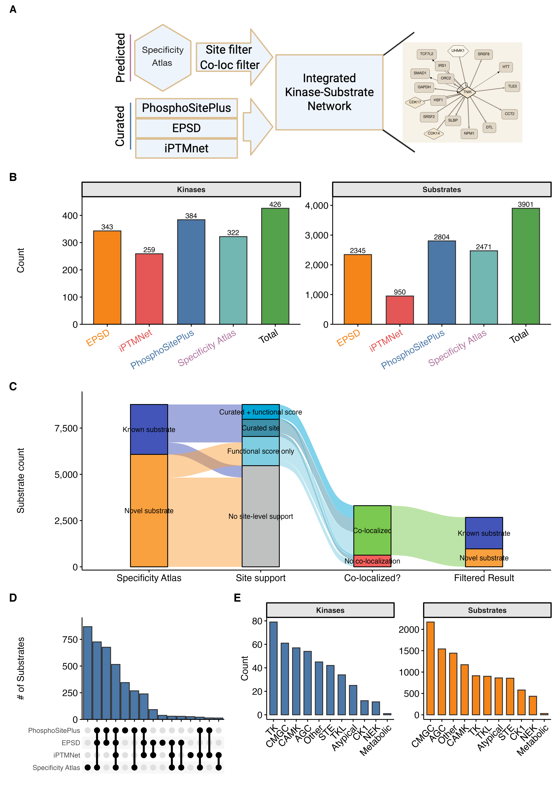
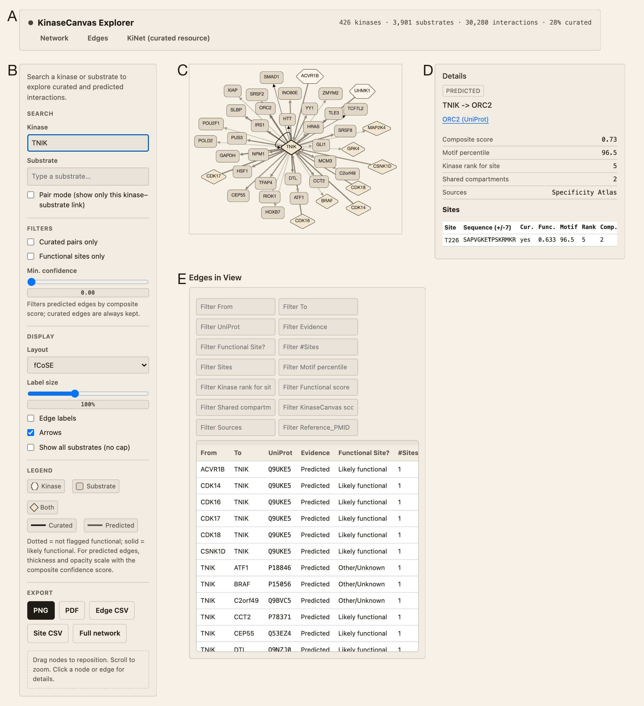
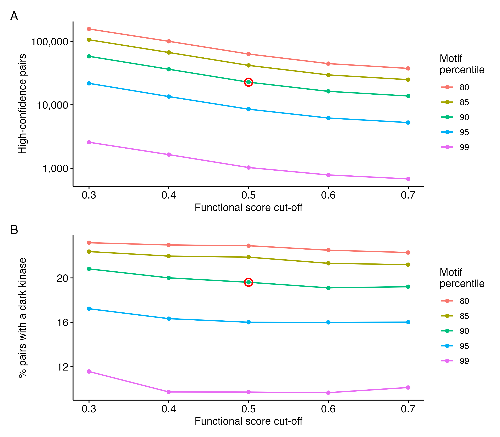

KinaseCanvas: An Integrated Resource for Curated and Novel Kinase-Substrate Interactions
Abstract
Protein phosphorylation is a cornerstone of human physiology, regulating pathways critical for development, metabolism, and disease. While curated databases like PhosphoSitePlus and iPTMnet provide high-confidence kinase-substrate interactions (KSIs), they remain biased toward well-studied signaling nodes, leaving the vast majority of the “dark” kinome unconnected. Recent specificity atlases have begun to fill this gap by profiling motif specificities for nearly all human kinases, yet these raw predictions are often too dense and noisy for direct biological interpretation. Here, we present KinaseCanvas, an integrated resource that places these motif predictions within the context of high-confidence curated data. By applying stringent biological filters for subcellular co-localization and phosphosite functional importance, we distill tens of millions of raw predictions into 21,916 high-confidence novel interactions and integrate them with 8,364 curated interactions, yielding 30,280 distinct kinase-substrate pairs. This integration increases the share of interactions involving understudied kinases roughly 4.6-fold, from 3.4% to 15.7%, and provides a context-aware framework for hypothesis generation, illuminating poorly characterized regions of the human kinome.
Database URL: https://cujoisa.github.io/KinaseCanvas/
Introduction
Protein phosphorylation is a pervasive regulatory mechanism that controls virtually every major cellular process. Public repositories now catalogue well over 200,000 human phosphosites distributed across the large majority of the human proteome (1,2), and modelling that accounts for the incomplete and biased coverage of tryptic phosphoproteomics places the true totals higher still (2,3). Estimates of how many of these sites are individually functional are considerably lower (4–6), so the operative problem is not enumeration but prioritization. Mapping which phosphorylation enzyme (kinase) modifies which protein (substrate) is therefore essential for understanding signal transduction, drug response and disease mechanisms, but this map remains far from complete. Over the past two decades, substantial effort has been put into building reference resources for kinase-substrate interactions (KSIs). Databases such as PhosphoSitePlus, EPSD and iPTMnet curate experimentally observed phosphosites and, where possible, annotate the upstream kinases based on low-throughput biochemistry, targeted phosphoproteomics and manual literature curation (1,7,8). Additional resources including Phospho.ELM, PhosphoNetworks and SIGNOR provide complementary KSI annotations derived from both focused and high-throughput studies (9–11), although these differ substantially in scope and currency: Phospho.ELM has not been updated since 2010, and PhosphoNetworks reports kinase-substrate relationships measured on protein microarrays without resolving the modified residue (10,12). PhosphoNET additionally provides sequence-based predictions of kinase-phosphosite pairings for 486 human protein kinases, using scoring matrices that span the -7 to +7 positions around the phosphoacceptor, alongside curated sites (13); the companion KiNECTOR resource (http://www.kinector.ca) aggregates over 25,000 human kinase-substrate-phosphosite relationships into navigable pathway maps. However, these curated datasets are heavily skewed towards a small subset of well-studied kinases, substrates and pathways, leaving large regions of the human kinome (including understudied “dark” kinases) sparsely connected or completely unmapped (14).
In parallel, unbiased experimental and computational approaches have recently produced near-comprehensive “specificity atlases” for the human kinome. Using peptide-library based specificity profiling, Johnson et al. systematically determined optimal substrate motifs for most human serine/threonine kinases and used these motifs to score reported human phosphosites (15). More recently, Yaron-Barir et al. generated an analogous atlas for the human tyrosine kinome (16). Together, these resources greatly expand the theoretical kinase-phosphosite search space: for each phosphosite, nearly all known kinases receive a motif-based compatibility score, yielding tens of millions of candidate KSIs. While these atlases have already been shown to recover known signaling relationships and highlight kinase dysregulation in disease contexts (15,16), their full potential as a systems-level KSI prior remains underexploited. Current visualization tools, such as the Kinase Library (15) and earlier motif scanners such as Scansite (17), focus on site-level scoring and lack interactive network visualization of kinase-substrate relationships. Furthermore, while methods like Kinase-Substrate Enrichment Analysis (KSEA) are widely used to infer kinase activity, they typically rely on curated databases or require manual integration of specificity matrices.
Moreover, profiling thousands of phosphosites against hundreds of kinases generates an enormous combinatorial prediction space: most sites have multiple plausible motif matches, and naïve motif scanning across the phosphoproteome leads to high false-positive rates and spurious kinase-substrate couplings (18,19). A major challenge is therefore that motif-based scores alone do not ensure that a kinase-substrate pair is physically or functionally plausible. Kinases and substrate pairs must co-localize in the cell, be expressed in the same tissues or conditions, and the modified site itself must be known or predicted to have some functional consequence. To address this, recent studies have demonstrated the value of integrating orthogonal data layers. In particular, Ochoa et al. developed a machine-learning approach that aggregates features ranging from evolutionary conservation and structural constraints to regulation across thousands of phosphoproteomics experiments. Their functional score effectively discriminates regulatory sites from non-functional ‘noise,’ substantially improving the biological interpretability of phosphoproteomic datasets (5,20). When combined with orthogonal constraints such as subcellular localization, these functional indicators could provide a powerful filter for identifying physiologically relevant kinase-substrate relationships.
Here, we build on these advances to construct an integrated resource of human kinase-substrate relationships that combines literature-curated KSIs with motif-based predictions from the serine/threonine and tyrosine kinome specificity atlases. We apply a set of simple but stringent biological filters based on (i) motif rank, (ii) subcellular co-localization using the Human Protein Atlas (HPA), and (iii) a data-driven phosphosite functional score (5,15,21,22). An overview of the data integration and filtering strategy is shown in Figure 1(A), including an example TRAF2 and NCK-interacting protein kinase (TNIK)-centred subnetwork. The resulting network is accessible through the KinaseCanvas Explorer, an interactive web application that allows users to query specific kinases or substrates, visualize their local interaction neighbourhoods, and seamlessly filter connections based on curation status or functional evidence. This unified framework enables researchers to distinguish novel from previously reported interactions and to systematically assess coverage of both well-studied and dark kinases.

Alt text: Workflow diagram showing integration of curated Kinase-Substrate sets with motif predictions, co-localization filters, and functional scores.
Materials and Methods
Curated kinase-substrate interactions
We first assembled a non-redundant reference set of human kinase-substrate-site relationships (“curated KSIs”) from multiple databases. Primary sources included PhosphoSitePlus (PSP), the Eukaryotic Phosphorylation Site Database (EPSD) and iPTMnet, which catalogue experimentally observed phosphosites and often annotate upstream kinases based on low-throughput experiments or kinase assays (7,8,23).
As a starting point, we downloaded the pre-assembled curated KSI table from the KiNet web portal, which aggregates KSIs from PhosphoSitePlus, EPSD and iPTMnet and provides kinase annotations (24). We then re-processed this table to harmonize identifiers and used available site-level functional annotations needed for our analyses. Briefly, we extracted the kinase gene symbol, substrate protein, phosphosite (modified residue and position), source database and/or PMID. Gene and protein identifiers were harmonized by mapping to official HGNC gene symbols and UniProt accessions (current versions as of January 10, 2026). When multiple isoforms existed, phosphosites were mapped to the reviewed (Swiss-Prot) sequence based on the human proteome when possible. Phosphosite notation was standardized to a single-letter residue code plus position (e.g. “S123”). Redundant entries arising from overlap across databases were collapsed, while preserving provenance information (all contributing databases and PMIDs).
Across PhosphoSitePlus, EPSD, iPTMnet and the specificity atlas we ultimately obtained 13,448 unique phosphosites, with PhosphoSitePlus contributing the largest number (9,339 sites) and EPSD (7,525 sites) and the specificity atlas (5,308 sites) contributing substantial additional coverage (Supp. Figure 1(A)). The overlap structure of these site sets, including sites unique to individual resources and those shared across multiple databases, is summarized in Supp. Figure 1(B). The resulting curated KSI set serves as a reference baseline for all subsequent analyses, and coverage of kinases and substrates contributed by each source is shown in Figure 1(B).
Kinome-wide motif-based substrate predictions
To substantially expand beyond known KSIs, we integrated motif-based predictions from the human kinome specificity atlases for serine/threonine and tyrosine kinases. Johnson et al. used position-specific scoring matrices derived from peptide library screens to define optimal substrate motifs for the vast majority of human serine/threonine kinases and subsequently scored reported human phosphosites against each kinase-specific motif (15). These matrix-based approaches have been complemented by more recent deep-learning architectures for phosphorylation site prediction (25). More recently, Yaron-Barir et al. generated an analogous atlas for the human tyrosine kinome (16). We and others collectively refer to these resources as the “specificity atlas”.
We obtained the per-kinase, per-phosphosite prediction scores from the supplementary materials. For each phosphosite (UniProt accession + position), the atlases provide a quantitative score or percentile rank reflecting how well the local sequence matches the optimal motif for each kinase (15,16). The complete, unfiltered specificity dataset—containing motif ranks, percentiles, and promiscuity indices for nearly 28 million kinase-substrate-site combinations—is provided as a supplemental resource (Supp. Table 1). From this prediction matrix, we extracted high-confidence motif-based KSIs using a percentile threshold. Following the original studies, we focused on phosphosite-kinase pairs in which the site ranked within the top 10% of all phosphosites scored for that kinase (\(\ge\) 90th percentile) (15,16). This conservative cutoff retains sites that are strongly preferred by the kinase’s motif and reduces the inclusion of weak, low-specificity matches. Because a single stringent tier structurally excludes kinases whose specificity is dominated by docking interactions rather than by the catalytic cleft (see Discussion), we additionally release a relaxed tier comprising kinase-site pairs between the 75th and 90th motif percentiles that satisfy the same contextual criteria. This layer is released as a separate, labelled table (see Data Availability) and is not part of the high-confidence set.
To further mitigate the problem of phosphosites that match the motifs of many kinases, we utilized the “promiscuity index” provided for each scored phosphosite, defined as the number of kinases for which that site ranks at or above the 90th percentile. Sites at or above the median promiscuity index (21 kinases) were excluded from the motif-based prediction set, as a site compatible with many kinases’ motifs carries little information about which of them acts on it. The remaining set of motif-supported KSIs was then passed to contextual filters described below.
Contextual filtering
Subcellular co-localization
Since kinase activity is constrained by spatiotemporal co-localization with substrates, we filtered motif-based KSIs based on subcellular localization. We used the HPA subcellular annotations, which provide antibody- and imaging-based localization calls for thousands of human proteins across 30 subcellular structures (22) (HPA subcellular location dataset, downloaded 10 January 2026). The mapping of gene-level subcellular compartmentalization used in this study is provided as a supplemental table (Supp. Table 2). For each kinase and substrate, we retrieved all reported compartments annotated at the “Enhanced”, “Supported” or “Approved” reliability levels, excluding “Uncertain” calls. For every predicted kinase-substrate pair, we then computed the intersection of kinase and substrate localization sets and recorded the number of shared compartments, which is released as a continuous column rather than only as a binary flag. Pairs with at least one shared compartment were considered co-localized and retained; pairs with no compartmental overlap were flagged as unlikely to occur in vivo and removed from the high-confidence set. Proteins absent from HPA necessarily have no shared compartment and are therefore treated as non-co-localized, so missing annotation and genuine spatial separation are not distinguished by this filter. The distribution of the fraction of motif-predicted substrates that co-localize with each kinase is shown in Figure 2(A); the median kinase retains 37.2% of its predicted substrates after applying this co-localization filter. We note that HPA localizations are neither exhaustive nor condition-specific, so some genuine context-dependent interactions may be lost. However, requiring at least one documented shared localization substantially increases the plausibility of retained KSIs.
Phosphosite functional score
To prioritize phosphosites with higher likelihood of regulatory impact, we integrated the phosphosite functional score developed by Ochoa et al., who re-analysed thousands of phosphoproteomics experiments to build a reference human phosphoproteome and then trained a gradient boosting model on sites of known function to integrate 59 features, grouped as mass-spectrometry evidence, phosphosite regulation, structural environment and evolutionary conservation, into a single score of functional relevance (5). The resulting score ranges from 0 to 1, with higher values indicating a greater probability that a site is functionally important.
We downloaded the pre-computed human phosphosite functional scores and mapped them to our phosphosite identifiers (provided as Supp. Table 3). For each predicted KSI, we annotated the substrate site with its functional score and designated a site as “likely functional” if its score was \(\ge\) 0.5. This is the threshold recommended by the authors of the score, who report that at a 0.5 cut-off approximately 10% of the phosphoproteome is retained while 50% of true-positive functional sites are recovered, making it a useful cut-off for initial prioritization (5); comparable thresholds have been applied in subsequent work (16). Because any fixed threshold is arbitrary at its boundary, we additionally report a sensitivity analysis across the range 0.3-0.7 and release a continuous confidence score (see below). As expected, tyrosine sites were markedly enriched for site-level support compared to serine or threonine sites (36.1% vs. 12.8% and 15.0% of unique sites, respectively; Figure 2(B)). Here, as in Figure 2(B), a site counts as supported if it is either already curated or carries a functional score above the cutoff; restricting to functional-score support alone among sites that carry a score gives 26.5%, 7.7% and 8.6%. The difference between residue classes is highly significant (\(\chi^2\) = 1848.1, df = 2, \(p < 2 \times 10^{-16}\); n = 5,132 tyrosine, 34,754 serine and 7,844 threonine sites). When stratified by source database, the proportion of scored sites classified as likely functional ranges from 45.4% (specificity atlas layer) and 47.4% (PhosphoSitePlus) through 50.1% (EPSD) to 62.2% (iPTMnet) (Figure 2(C) and Supp. Figure 1(C)). The atlas-derived layer is not enriched relative to the curated sources because, under the disjunctive site-level criterion described below, a site can enter it on the strength of curation alone; the comparison is therefore most informative for the curated sources, which are not filtered on this score. Unless otherwise noted, analyses focusing on functional sites consider only motif-based KSIs whose substrate sites passed this functional score threshold.

Alt text: Statistical distribution of phosphosite functional scores across different residue types (Y, S, T) and source databases.(A) shows co-localization fraction by kinase;(B) shows functional score enrichment for tyrosine sites.
Integration of motif, localization and function
Combining the motif, promiscuity, localization and functional filters, we defined a high-confidence predicted KSI set as those kinase-substrate-site triplets that satisfy all of:
- Motif support: the substrate site ranks in the top 10% of all phosphosites scored for that kinase (\(\ge\) 90th percentile) in the relevant serine/threonine or tyrosine atlas.
- Specificity: the site falls below the median promiscuity index, excluding sites that are top-ranked by many kinases.
- Co-localization: kinase and substrate share at least one HPA-annotated subcellular compartment.
- Site-level support: the substrate site either has a phosphosite functional score \(\ge\) 0.5 or is already curated in PhosphoSitePlus, EPSD or iPTMnet.
Criterion 4 is deliberately a disjunction rather than a conjunction. A site that has already been curated from the primary literature carries direct experimental evidence of relevance, so requiring it to additionally clear a machine-learned functional-score threshold would discard well-established sites on the basis of a predictor. Curated and functional-score support are reported as separate columns so that either can be required independently.
The effect of these filters on the substrate set is visualized as an alluvial diagram in Figure 1(C), with per-stage substrate counts given in Supp. Table 4. It tracks substrates from known vs. novel status, through site-level support and co-localization, to the final set. Although some true interactions will undoubtedly be excluded (e.g. transient co-localization not captured by HPA, functional sites below the threshold, or kinases with context-dependent specificity), we deliberately favour specificity over sensitivity to generate a conservative, high-confidence prediction set. Each predicted KSI is also cross-referenced to the curated KSI list; interactions present in curated databases are flagged as “known”, whereas motif-only interactions with no curated evidence are classified as novel predictions contributed by this resource.
Species and isoform handling
The resource is restricted to human proteins (NCBI taxonomy 9606). Every protein in the curated KiNet table is a reviewed (Swiss-Prot) human UniProt entry, and we performed no cross-species orthologue mapping of our own, so a site enters the resource only if a contributing database reports it on the human protein. All phosphosite positions refer to the canonical UniProt sequence of the substrate: neither the curated table nor the specificity atlases use isoform-specific accessions. Every site is checked against that canonical sequence (see below), and the UniProt accession is released alongside every site so that positions can be verified independently.
Substrate and kinase identity resolution
Resolving protein identity from gene symbols alone is unreliable for this application, because many legacy protein names are aliases of several distinct genes. We therefore resolve substrate identity from the UniProt accession supplied by the specificity atlases, falling back to the gene symbol only where it maps unambiguously to a single gene. Kinase identity is resolved from the atlas column names (which use Manning/CORAL-style short names such as P38A, CK1D and MEK1 rather than HGNC symbols) against a curated kinome reference table, then against unambiguous aliases, with a small explicit override list for names that neither source covers; the pipeline halts if any atlas kinase name remains unresolved rather than silently discarding it. Every released kinase-substrate-site triplet is checked automatically against the source atlas to confirm that the site belongs to the accession it is reported under. Every site is additionally checked against its canonical UniProt sequence, which also yields the -7/+7 flanking sequence shown for each site (verified for 95.4% of sites; unverified sites are left without one rather than shown an unverified guess).
Confidence scoring
Alongside the binary criteria above, each predicted interaction carries a continuous confidence score. Motif percentile and functional score are each passed through a monotonic, continuously differentiable logistic transform centred on the corresponding threshold, and localization evidence is expressed as a saturating function of the number of shared HPA compartments rather than a binary flag. The composite score is the unweighted mean of the three components, and all three components are released as separate columns so that users can reweight or threshold them independently. This is a transparent re-weighting rather than a calibrated probability: a fully probabilistic treatment would require labelled negative examples, which do not exist at kinome scale (26,27).
Information content of the evidence layers
To quantify how much each evidence layer contributes and how far the layers overlap, we recorded the full joint contingency table of the three indicators (co-localization, curated-site status and functional-score support) over all motif-passing kinase-site pairs, before any of them had been applied. From this table we computed marginal Shannon entropies, pairwise mutual information, normalised redundancy (mutual information divided by the smaller of the two marginal entropies) and conditional mutual information, together with a leave-one-filter-out analysis quantifying how many pairs each layer uniquely removes.
Annotation of dark kinases
To assess how the integrated network covers dark kinases, we used the DarkKinaseTools R package from the NIH Illuminating the Druggable Genome (IDG) programme to classify kinases as “understudied (dark)” or “well-studied (light)” based on publication counts, functional annotations and available reagents (14). This classification was mapped onto our KSI network, enabling summary statistics on the proportion of curated vs. predicted substrates assigned to dark kinases. We also summarised the fraction of substrates that are novel (predicted only) for each kinase family (Figure 3(A)) and quantified the fraction of kinase–substrate pairs involving dark kinases in the curated set versus the curated-plus-specificity atlas integrated network (Figure 3(B)).
Implementation
All data integration, filtering and visualisation were performed in R using the tidyverse ecosystem for data manipulation and plotting. Kinome annotations and dark/light classifications were obtained via DarkKinaseTools and associated IDG resources (14). Upset plots showing overlap between resources (for phosphosites and substrates) were generated using the ggupset package (Supp. Figure 1(B); Figure 1(D)). Scripts used to download source datasets, perform identifier harmonisation, apply filters and generate figures are provided in GitHub to facilitate reproducibility and reuse.
Results
Structure and coverage of the integrated resource
The final resource is organised into two primary tables:
- Kinase-substrate pair table. This table lists each unique kinase–substrate pair (gene symbols), with columns indicating:
- whether the pair is supported by curated databases, motif-based predictions, or both;
- the number, identity and directionality of phosphosites linking the kinase and substrate;
- source databases and PMIDs for curated evidence;
- motif-related annotations (serine/threonine vs. tyrosine atlas);
- contextual evidence flags (co-localization, functional score above threshold); and
- dark/light status of the kinase.
- Phosphosite table. This table lists each unique substrate site (UniProt accession, residue, position) together with its assigned kinases and annotations, including:
- motif-based scores and ranks for all compatible kinases;
- flags for high-confidence motif assignments (top 10%);
- phosphosite functional score (continuous) and functional classification (\(\ge\) 0.5 vs. \(<\) 0.5);
- curated vs. predicted status;
- the -7/+7 flanking sequence, verified against the canonical sequence; and
- basic protein metadata.
Across all sources, the integrated resource covers 426 kinases and 3,901 substrate proteins (Figure 1(B)). PhosphoSitePlus and EPSD contribute the largest numbers of substrates, while the specificity atlas brings in additional substrates not present in curated databases (Figure 1(B)). At the site level, we catalogue 13,448 unique phosphosites across PhosphoSitePlus, EPSD, iPTMnet and the specificity atlas (Supp. Figure 1(A)), with substantial but incomplete overlap between resources (Supp. Figure 1(B)).
In terms of kinase-substrate pairs, the curated KSI set contains 8,364 distinct pairs, while the high-confidence motif-based predictions add 21,916 novel pairs not present in curated databases, for a total of 30,280 distinct pairs (Figure 3(C)). Most kinases gain dozens of novel substrates: the distribution of novel substrates per kinase is right-skewed, with a median of 47 novel substrates among kinases that also have curated substrates, and some kinases gaining more than 350 (Figure 3(D)).

Alt text: Comparison of kinase coverage and substrate counts between curated databases and the integrated resource. Shows a 3.6-fold increase in KSI pairs and highlights expansion for dark kinases across different families.
Functional and family-level properties
Site-level support is most frequent for tyrosine sites and for sites drawn from iPTMnet (Figure 2(B) and Supp. Figure 1(C)). Of the 3,307 substrates with site-level support, 2,471 (75%) have at least one kinase-site pair that is also co-localized and are retained (Figure 1(C); Supp. Table 4).
Kinase and substrate coverage varies across kinase families (Figure 1(E)). TK and CMGC kinases are most numerous, whereas AGC, CAMK and “other” families contribute comparable numbers of kinases but differ in substrate counts (Figure 1(E)). When focusing on novel substrates, dark kinase families show particularly high fractions of predicted-only substrates: “other” and atypical kinases have 66.6% and 62.0% of their substrates classified as novel, respectively, while CAMK and CMGC kinases have 50.7% and 37.5% (Figure 3(A)). Incorporating the specificity atlas increases the fraction of kinase–substrate pairs involving dark kinases roughly 4.6-fold, from 3.4% in curated databases alone to 15.7% in the integrated network (Figure 3(B)), underscoring the value of motif-based predictions for illuminating poorly studied regions of the kinome.
Robustness of the filtering criteria
Because both the motif and functional-score criteria are applied as thresholds, we asked how sensitive the resource is to where those thresholds are placed. Sweeping the functional-score cut-off from 0.3 to 0.7 and the motif percentile from the 80th to the 99th (Supp. Figure 2) changes the size of the high-confidence set substantially – at the 90th motif percentile, the number of retained pairs falls from 58,319 to 13,815 across the functional-score range – but leaves the qualitative conclusions intact. The proportion of retained predicted pairs involving a dark kinase varies only between 19.1% and 20.8% across that same functional-score range, and the number of kinases represented varies between 318 and 325. The sweep re-implements the filters independently; at the operating point used throughout (90th percentile, functional score 0.5) it retains 22,804 predicted pairs, against 22,797 in the released resource.
We also asked how much information each evidence layer actually contributes, and how far the layers overlap. Across all motif-passing kinase-site pairs, subcellular co-localization carries the highest marginal entropy (0.896 bits, versus 0.418 bits for curated-site status and 0.430 bits for functional-score support). Pairwise mutual information between the three layers is very small: 0.0008 bits between co-localization and curated status, 0.0007 bits between co-localization and functional-score support, and 0.0082 bits between curated status and functional-score support, giving normalised redundancies of 0.19%, 0.16% and 1.95% respectively, and conditioning on the third indicator does not change this. The layers are therefore close to orthogonal, and each is doing distinct work: in a leave-one-out analysis, co-localization uniquely removes 47,029 kinase-site pairs that satisfy every other criterion, and omitting it would inflate the high-confidence set by 182%. This filter is not trivially satisfied: the median gene has HPA annotations for two compartments and only 2.6% of annotated genes are assigned to five or more.
The specificity atlases score only phosphosites that have already been observed in phosphoproteomics experiments, and because that literature is dominated by immortalized and cancer cell lines, we expected coverage to be uneven with respect to tissue-restricted proteins. It is. Classifying substrates by HPA RNA tissue specificity, 70.4% of substrates with low tissue specificity gain at least one novel predicted interaction, falling monotonically to 57.8% for tissue-enhanced, 46.9% for group-enriched and 40.6% for tissue-enriched proteins. Conversely, the proportion of substrates for which we contribute nothing beyond existing curation rises from 29.6% to 59.4% across the same gradient. Predictions are therefore systematically sparser for specialized proteins that define differentiated cell types, and users working on tissue-restricted biology should expect the resource to be less complete for their proteins of interest.
Interactive exploration and visualization
To make these integrated data accessible to the broader community, we developed KinaseCanvas Explorer, an interactive web application that enables users to query, filter, and visualize the kinase-substrate network. The explorer provides a unified interface where users can seed the graph with a kinase or substrate of interest to generate a local interaction neighbourhood (see interface in Figure 4(A, B) and a representative network in Figure 4(C)). Key features include:
- Kinase- or substrate-first querying: The graph can be seeded from either a kinase or a substrate, with autocomplete on both fields. Seeding with a substrate returns all upstream kinases, curated and predicted, so the resource can be used to ask which kinases might act on a protein of interest as readily as the reverse.
- Site-level interrogation of a specific pair: A pair mode restricts the view to a single kinase-substrate link and ranks the candidate sites on that substrate. This addresses the common experimental situation in which a kinase is known to phosphorylate a protein (e.g., from a band shift on a Phos-tag gel or a pan-phosphotyrosine blot) but the modified residue is unidentified.
- Site sequence context: Each site’s -7/+7 flanking sequence is shown with the phosphoacceptor highlighted, verified against the canonical UniProt sequence for every site in the resource.
- Quantitative evidence on every interaction: The motif percentile, the kinase’s rank for that site among all kinases, the phosphosite functional score, the number of shared subcellular compartments and the composite confidence score are all displayed in a filterable table of the interactions in view and carried into every table export. A minimum-confidence slider filters predicted edges on the composite score.
- Explicit evidence provenance: Curated-site status and functional-score support are reported as separate fields, so a site known to be functional from the primary literature is distinguishable from one predicted to be functional, and the view can be restricted to curated pairs or to functional sites.
- Visual encoding: Node shape and colour encode role (kinase, substrate, or both), and for predicted edges the line thickness and opacity scale with the composite confidence score, so relative support is visible and not merely filterable.
- Legible neighbourhoods for promiscuous kinases: Highly connected kinases would otherwise render as unreadable hairballs; the most connected, CDK1, has 629 substrates. A seeded neighbourhood is therefore capped at 75 interactions by default, chosen under a stated ordering (curated first, then by descending composite confidence, ties broken alphabetically), with the count shown and the cap removable in one click. The cap does not affect the 63% of kinases, and 96% of all proteins in the resource, whose neighbourhoods contain 75 or fewer interactions.
- Click-to-inspect detail panel: Selecting a protein shows its role, UniProt link, numbers of substrates and upstream kinases, and its highest-ranked interactions. Selecting an interaction shows its evidence, sources and PMIDs, together with a per-site table giving each site’s flanking sequence, curation status, functional score, motif percentile, kinase rank and shared compartments, with curated sites listed first and the rest ranked by motif percentile.
- Display options: Five layout algorithms (fCoSE, CoSE, CoSE-Bilkent, Concentric and Breadthfirst) are available, together with adjustable label size and optional edge labels and arrows.
- Export options: Network images can be exported as PNG or PDF, and both edge-level and site-level tables can be downloaded as CSV for either the current selection or the complete network.

Alt text: The KinaseCanvas Explorer interface, showing the header statistics, the search and filter sidebar, a TNIK-seeded network, the detail panel for a selected interaction with its per-site evidence, and the filterable table of interactions in view.
Discussion
We have developed a comprehensive resource that combines literature-curated phosphorylation data with empirically measured, kinome-wide substrate specificity profiles to chart the human kinase–substrate network. This addresses a major gap in cell-signalling knowledge: despite decades of study, substrates are still unknown or poorly defined for most human kinases (9,10,14). By leveraging recent motif profiles for ~90% of the human kinome (15,16), we systematically expand substrate lists for hundreds of kinases and then constrain these predictions with biologically motivated filters for co-localization and phosphosite functionality. The result is a collection of KSI hypotheses that is both broad—increasing the number of candidate KSIs 3.6-fold relative to curated databases alone (Figure 3(C))—and enriched for plausible, potentially regulatory interactions (Figure 1(A); Figure 2(A); Supp. Figure 1(A)).
Relationship to existing resources
Traditional resources such as PhosphoSitePlus, EPSD and iPTMnet grow as new experimental data and curated literature are added (7,8,23). These databases provide high-confidence KSIs, but their coverage is limited by experimental throughput and publication bias towards a small set of kinases and pathways (14). The recently introduced KiNet web portal builds directly on these curated datasets by aggregating interactions from PhosphoSitePlus, EPSD and iPTMnet, annotating kinases with group membership and pathway/domain context, and providing interactive network visualisations for user-selected protein sets (24).
Our work is complementary to, and explicitly builds on, KiNet. We use the KiNet-integrated KSI network as the starting curated set, but then extend it in three major ways. First, we overlay kinome-wide, empirically measured substrate specificity atlases for serine/threonine and tyrosine kinases (15,16) to infer motif-supported kinase–phosphosite edges that are not yet observed experimentally (Figure 3(C)). Second, we integrate orthogonal contextual information: subcellular localization from HPA (22) and phosphosite functional scores from Ochoa et al. (5) to filter and prioritize predicted interactions (Figure 1(A); Figure 2(A); Supp. Figure 1(A)). Third, we systematically quantify how these additions expand coverage for dark kinases and for different kinase families (Figure 3 (A, B)). In practical terms, whereas KiNet focuses on exploring known KSIs across pathways and protein sets, our resource aims to “fill in” missing edges by providing a ranked, context-aware set of candidate interactions centred on phosphosite-level properties.
The Kinase Library web portal (15) serves as the primary interface for the Johnson et al. and Yaron-Barir et al. atlases, allowing users to score specific peptide sequences against kinase motifs. However, it is designed for sequence-level queries rather than network exploration. Similarly, tools like the KSEA App enable kinase-substrate enrichment analysis but often rely on curated databases or require users to upload custom specificity matrices, and do not provide a browsable network of high-confidence predictions.
Earlier motif-based tools such as NetPhorest, Scansite and GPS used consensus sequence motifs and position-specific scoring matrices compiled from smaller sets of peptide library experiments or literature-derived substrates (17,18,28). These resources proved useful for hypothesis generation but were limited in kinase coverage and often relied on consensus motifs shared across related kinases. The specificity atlases used here are broader in scope, profiling hundreds of human kinases with oriented peptide libraries and scoring essentially the entire known human phosphoproteome (15,16). Intersecting these empirically derived motif scores with orthogonal features is intended to improve the signal-to-noise ratio relative to motif scores alone. This multi-layer integration is aligned with a broader trend in systems biology toward combining complementary datasets and prior knowledge to infer more accurate signalling networks (5,11,16).
Motif models derived from peptide libraries and from in vitro phosphoproteomics
The motif layer of this resource is built on positional-scanning peptide library data (15,16), which has inherent limitations. Peptide libraries measure the intrinsic preference of the catalytic cleft against a degenerate synthetic background, which gives uniform coverage across the kinome but can have modest signal-to-noise for individual kinases and, by construction, reports only what the active site sees. An orthogonal strategy is to phosphorylate dephosphorylated proteome extracts with individual recombinant kinases and read out the products by mass spectrometry, as done by Sugiyama et al. for 385 kinases (29). This design presents kinases with protein substrates in native sequence context, and several groups have since converted the resulting data into position-specific matrices suitable for scoring. Poll et al. derived position-dependent Shannon information matrices for 384 kinases (30), and Invergo et al. built position-specific scoring matrices and naive Bayes classifiers from the same source (26).
These two experimental designs are complementary rather than competing. Poll et al. compared their mass-spectrometry-derived “logos” directly against the peptide-library motifs used here and reported a high degree of concordance, concluding that the best predictions are likely to come from combining both data types (30). A systematic head-to-head comparison of peptide-library and in vitro phosphoproteomic specificity models is an important future direction as an independent benchmarking enterprise. In the meantime, users should understand the motif layer of KinaseCanvas as one particular, uniformly measured view of intrinsic specificity rather than as a complete model of substrate recognition.
Orthogonality and information content of the evidence layers
A reasonable concern about any resource that stacks filters is whether the layers are independent or largely re-encode the same signal. The analysis in Results shows that they are close to orthogonal, and the small redundancy that does exist, between curated status and functional score, is consistent with both depending on how thoroughly a site has been observed. This is expected from how the functional score is built. It is trained on 59 features spanning mass-spectrometry evidence, phosphosite regulation, structural environment and evolutionary conservation (5), and subcellular localization is not among them. The co-localization filter therefore contributes essentially independent evidence and does substantial work of its own, rather than rubber-stamping decisions already made by the other layers.
Biological insights from the integrated network
The integrated network reveals several notable features of kinase-substrate annotation. First, the distribution of novel substrates across kinases is highly non-uniform (Figure 3(D)). Many kinases with already rich substrate annotations gain additional predicted substrates but do not dominate the novel interaction set, partly because of our promiscuity and functional filters. In contrast, a large number of kinases with few or no curated substrates acquire predicted substrates, often with strong motif support, high phosphosite functional scores and clear co-localization with substrates (Figure 1(A); Figure 2(A); Figure 3(C)). This pattern is particularly evident among dark kinases, for which more than half of substrates are novel predictions in several kinase families (Figure 3(A)). The fraction of KSI pairs involving dark kinases increases from 3.4% in curated databases alone to 15.7% in the integrated network (Figure 3(B)), highlighting the potential of motif-informed approaches to illuminate poorly characterised parts of the kinome (14).
Second, our residue-level analyses show that tyrosine sites are both less frequent and more strongly enriched for site-level support than serine or threonine sites: 36.1% of tyrosine sites in our resource are either already curated or carry a functional score above the threshold, compared with 12.8% of serine and 15.0% of threonine sites (Figure 2(B)); the corresponding functional-score-only figures, among sites carrying a score, are 26.5%, 7.7% and 8.6%. We report this as a property of the assembled resource rather than as a claim about the phosphoproteome, because several factors plausibly contribute to it and we cannot separate them here. Much of the available phosphotyrosine data was generated using anti-phosphotyrosine immunoaffinity enrichment (31), a targeted design that both concentrates on sites of prior biological interest and differs systematically from the untargeted enrichment used for serine and threonine sites. Phosphotyrosine is also the smallest and best-studied of the three classes, so its coverage is comparatively closer to saturation, and a substantial share of well-characterised tyrosine sites are receptor tyrosine kinase autophosphorylation sites whose documented function is to recruit SH2- and PTB-domain effectors (32). Any of these would raise the apparent functional-score enrichment of tyrosine sites independently of underlying regulatory importance. Published analyses likewise report that tyrosine and serine/threonine phosphorylation differ in their regulatory character and in the depth to which each has been sampled (3,5), and the relative evolutionary conservation of phosphothreonine and phosphotyrosine sites remains an area of active disagreement (4,5). We therefore draw no evolutionary inference from this observation.
The value of layering orthogonal evidence is illustrated by RANGAP1 S442, an experimentally observed mitotic phosphosite that lies in a cyclin-dependent kinase (Cdk) consensus motif but has no assigned upstream kinase in the curated databases we integrated (33). In the serine/threonine specificity atlas (15), five kinases score at or above the 90th percentile for this site: CDK2 (rank 1, 98.8th percentile), CDK3 (rank 2, 98.1st), CDK1 (rank 3, 94.8th), MARK3 (rank 4, 90.6th) and GSK3B (rank 5, 90.2nd) – kinases with overlapping motif preferences that sequence information alone cannot separate. Localization does separate them: CDK1 and CDK3 share the cytosol with RANGAP1, whereas CDK2 and GSK3B are annotated only to compartments that RANGAP1 does not occupy and MARK3 has no HPA annotation. The site also carries a high functional score (0.92). The pipeline therefore retains CDK1 and CDK3, and its preference for CDK1 over CDK2 agrees with the original report, which proposed on the basis of the timing and location of RanGAP1’s mitotic phosphorylation that Cdk1, rather than the G1/S kinase Cdk2, is the likely in vivo kinase, although in that study recombinant Cdks phosphorylated T409 far more efficiently than S442 in vitro (33). Because CDK1 is already curated as a RANGAP1 kinase at the neighbouring site T409 (EPSD, iPTMnet and PhosphoSitePlus), this prediction is best read as a site-level extension of an established kinase-substrate relationship, of the kind the pair mode of the Explorer is designed to support. Localization is nevertheless a static, annotation-based filter, and here it removes a kinase that is capable of the reaction: recombinant cyclin A/Cdk2 also phosphorylates RanGAP1 in vitro (33).
Similarly, our resource illuminates potential regulatory roles for dark kinases. MAPK15 (ERK8) is classified as understudied by the IDG programme (14) and has few annotated substrates despite belonging to a well-characterised, proline-directed kinase family. Our pipeline nominates RING1, the E3 ubiquitin ligase subunit of the Polycomb repressive complex 1, as a candidate substrate at S38. The prediction satisfies every criterion in the pipeline and is internally coherent with what is known about the kinase: MAPK15 is the top-ranked kinase of the entire kinome for this site (rank 1, 99.0th percentile), the site carries a high functional score (0.89), MAPK15 and RING1 share two annotated compartments (cytosol and nucleoplasm), and the local sequence (DGTEIAV-S-PRSLHSE) is a canonical serine-proline motif of the kind MAPK-family kinases require. Six of the seven kinases that score at or above the 90th percentile for this site are retained (PINK1, ranked third, shares no compartment with RING1), and MAPK15 ranks first among them, well ahead of ERK1 (MAPK3; rank 2, 93.5th percentile). S38 is an experimentally observed phosphosite that currently has no assigned upstream kinase in the curated databases we integrated, which is precisely the gap this resource is intended to fill. We present it as a prioritised hypothesis for experimental testing rather than as an established mechanism.
Third, the family-wise patterns in Figure 1(E) and Figure 3(A) imply that certain kinase groups such as atypical and “other” kinases may be systematically under-annotated at the substrate level. For these groups, more than half of substrates in our resource are novel, motif-supported predictions (Figure 3(A)). This suggests that a substantial fraction of phosphorylation events currently attributed to generic “proline-directed” or “acidic” kinases could, in fact, be mediated by less-characterised kinases with similar motifs but distinct biological roles. Experimental testing of these candidates using targeted kinase perturbation combined with phosphoproteomics or substrate-trapping mutants could reveal new pathways and cross-talk among kinase families (18,19,34).
Limitations and caveats
Despite the stringent filtering, our predictions remain hypotheses and not confirmed in vivo interactions. Several limitations merit consideration. First, kinases with highly similar motifs (e.g., AKT vs. SGK, or different MAPKs) will often share predicted substrates (15,32,35). Sequence-based motif scoring alone cannot always discriminate which kinase is responsible for a given phosphosite in a particular cell type or condition. Our co-localization filter removes obvious mismatches (e.g., a mostly cytosolic kinase and an exclusively nuclear substrate), but does not capture dynamic relocalization, scaffold-mediated proximity or compartment-specific isoforms. As a consequence, some true interactions may be excluded, while some retained interactions may occur only in specific contexts not captured by current localization data (22). Users should therefore treat the predicted kinase list for each phosphosite as a set of candidates to be prioritised rather than a definitive assignment.
Second, we consider each phosphosite largely in isolation, whereas substrate recognition in vivo depends on determinants that lie outside the +/-7 residue window a position-specific matrix can see (32). Kinases are recruited to substrates through docking interactions distinct from the catalytic cleft, including the D- and DEF-motifs used by MAP kinases and the SH2- and PTB-domain interactions that bring receptor tyrosine kinase substrates to high effective local concentration (32). A peptide that scores poorly against a kinase’s linear motif can therefore still be an efficient substrate once bound. Recognition is also frequently hierarchical: casein kinase 1 requires a phosphorylated residue at n-3, GSK3 at n+4, and casein kinase 2 can use either canonical or phospho-determinants, so a site’s suitability depends on prior modification events that a static motif score does not represent (32). A site that matches a kinase motif may equally remain unphosphorylated if it is buried in the folded protein or if an upstream priming event is absent. Conversely, kinases can act on multiple sites within the same substrate, and combinatorial patterns of phosphorylation may be required for functional output. Our use of a phosphosite functional score partially accounts for evolutionary conservation, structural features and regulatory behaviour (5), but cannot fully model three-dimensional accessibility or cooperative phosphorylation events. Taken together, these mechanisms bias a top-percentile motif tier against precisely those kinases for which docking, rather than the catalytic cleft, dominates substrate selection – which is one reason we also release a continuous confidence score and a relaxed motif tier. Incorporating structural information, as done in 3D-aware prediction tools, and explicit modelling of docking and priming determinants would improve specificity for kinases with overlapping linear motifs (32).
Third, every criterion is applied as a threshold, and thresholds are arbitrary at their boundaries: a site scoring 0.4999 on the functional score is excluded while one scoring 0.5001 is retained, and once retained the two are treated identically even though a site scoring 0.99 is far better supported. The cut-offs are not arbitrary in origin (0.5 is the value recommended by the authors of the functional score (5), and the 90th motif percentile follows the specificity atlases (15,16)), and we mitigate their effect in two ways: the sensitivity analysis shows which conclusions depend on the operating point, and the continuous confidence score lets users rank rather than filter. A fully probabilistic treatment, in which each layer contributes a calibrated likelihood, would be preferable, but it requires labelled negative examples that do not exist at kinome scale; existing approaches rely on curated positives with sampled decoys or on in vitro assay data (26,27).
Fourth, our filters are spatial but not temporal. Requiring a kinase and substrate to share a subcellular compartment is a necessary condition for a genuine interaction, not a sufficient one: a real kinase-substrate pair should additionally show coordinated behaviour over time, with substrate phosphorylation tracking kinase activity across stimuli, inhibitor treatments or genetic perturbation. Compendia of perturbation phosphoproteomics now make this tractable in principle (35,36), and adding a co-regulation layer – either as an additional evidence component or as a filter in its own right – is the most obvious way to improve the resource.
Fifth, coverage is systematically uneven with respect to cell-type-specific biology: novel predictions reach 70.4% of substrates with low tissue specificity but only 40.6% of tissue-enriched substrates. Three mechanisms contribute to this result. The specificity atlases score only phosphosites already reported in phosphoproteomics experiments, a literature dominated by immortalized and cancer cell lines, so a site never observed in those systems cannot enter the resource however good its motif match (37). Tissue-restricted proteins have sparser HPA annotation, so co-localization can fail for missing-data rather than biological reasons (22,38). Lastly, functional scores depend on depth of mass-spectrometry sampling, which is likewise uneven. The practical consequence is that specialized proteins that give differentiated cells their identity contribute the least beyond existing curation. However, by the same logic, the resource is at its most useful in settings where differentiated programs are lost: cancer being the clearest case, and one where large phosphoproteomic cohorts already exist to test predictions against. Deeper phosphoproteomics of primary tissues and better localization coverage of tissue-restricted proteins would narrow this gap.
Finally, we focus on the presence of potential kinase-substrate relationships rather than their quantitative strength or regulatory sign (activating vs. inhibitory). Integrating quantitative phosphoproteomic time series with prior KSI networks has been shown to enable inference of causal directionality and sign (21). Extending our resource with such information is a promising direction but beyond the scope of the current study.
Future directions
Several extensions could further enhance the resource. First, incremental updates can incorporate new phosphosites, additional motif profiling experiments and improved functional annotations. As kinase specificity profiling is completed for remaining kinases and refined under different conditions (15,16), our pipeline can be rerun to refresh motif-based predictions and coverage. Second, dynamic data could be used to refine or reweigh predicted interactions. Condition-specific phosphoproteomics, kinase inhibition or knockdown experiments, and proximity-labelling assays can provide direct evidence for or against particular KSIs (5,18,34). Such data could be integrated into probabilistic or machine-learning models that jointly consider motif score, co-localization, co-expression, network proximity and experimental perturbation response to yield calibrated confidence estimates, as done in other kinase–substrate prediction frameworks (5,11,16–18). Our current filtering scheme could thus serve as a transparent baseline on top of which more sophisticated predictive models are trained. Third, tighter integration with existing resources would increase usability. For example, predicted KSIs could be deposited into PhosphoSitePlus, SIGNOR or related databases as “computationally inferred” interactions with explicit evidence codes (motif-based, co-localization-supported, functional-site-supported) (8,11,23). This would allow researchers querying a protein of interest to view predicted kinases alongside curated ones. Similarly, linking our predictions with the Dark Kinase Knowledgebase and other IDG tools (14) could help experimental groups prioritize substrates for poorly studied kinases, accelerating efforts to “de-orphanise” dark kinases.
Finally, there is an opportunity to exploit the resource in disease-focused studies. Many of the substrates and sites in our network overlap with proteins mutated or dysregulated in cancer and other diseases (5,15,17,21,23). Combining our KSI predictions with genomic or proteomic alterations from patient cohorts could reveal candidate kinase-substrate axes driving pathology, and suggest biomarkers or therapeutic targets whose activity might be inferred from phosphosite status.
Conclusion
In summary, we present a resource that substantially broadens the current landscape of human kinase–substrate relationships by integrating empirical specificity atlases with curated phosphorylation databases, subcellular localization and phosphosite functional scores. The integrated network increases the number of candidate KSIs 3.6-fold, markedly increases coverage for dark kinases, and enriches for sites with features indicative of regulatory function (Figure 1(A); Figure 2(A); Figure 3(C); Supp. Figure 1(A)). By design, the predicted interactions are hypotheses that require experimental validation, but they provide a focused and context-aware starting point for dissecting signalling pathways, particularly in areas of the kinome that have received little prior attention. Bridging the gap between large-scale phosphoproteomic data and specific kinase assignments is essential for mechanistic understanding and for translating signalling knowledge into therapeutic strategies (1,5,7,24,28); our work represents a step toward that goal.
Funding
This work was supported by the National Institutes of Health [R01 CA288145 to J.J.Y.; U01 CA274298 to J.J.Y. and X.L.P.; P50 CA257911 to J.J.Y. and X.L.P.; U24 CA211000 to X.L.P. and J.J.Y.].
Conflict of Interest
The authors declare no competing interests.
Acknowledgements
We thank the contributors to the PhosphoSitePlus, EPSD, iPTMnet, and Human Protein Atlas databases for providing the primary data that underlies this integrated resource.
Data Availability Statement
The KinaseCanvas interactive resource is available at https://cujoisa.github.io/KinaseCanvas/, where the integrated network can be browsed and the edge-level and site-level tables downloaded in full. Each released kinase-substrate-site triplet carries the individual evidence values behind its classification (motif percentile, the kinase’s rank for that site, promiscuity index, phosphosite functional score, number of shared subcellular compartments and the composite confidence score), so the inclusion criteria can be checked case by case. All code used for data integration, filtering and analysis is available at https://github.com/cujoisa/KinaseCanvas. Supplementary Tables S1-S4 (S1 being the complete unfiltered prediction matrix) and the relaxed motif tier are deposited on Zenodo (https://doi.org/10.5281/zenodo.22941318); source datasets are redistributed under the terms of their original licences.
Supplementary Data
Unfiltered specificity atlas. Motif ranks, percentiles, and promiscuity indices for the human kinome specificity atlases. Provided as unfiltered_cantley_dataset.csv.
Subcellular localization mapping. Protein compartmentalization data derived from the Human Protein Atlas (HPA). Provided as subcellular_localization_mapping.csv.
Phosphosite functional scores. Pre-computed functional scores for each reported phosphosite in the human phosphoproteome. Provided as ochoa_functional_scores.csv.
Substrate counts at each stage of the filtering summarised in Figure 1C. Each substrate is counted once per stage. A substrate enters the diagram if at least one of its sites ranks at or above the 90th percentile for a kinase with below-median promiscuity; it is “known” if it has at least one curated interaction with any kinase and “novel” otherwise. Site-level support means that at least one such site is curated or has a functional score \(\ge\) 0.5. A substrate is retained (“co-localized”) when at least one of its motif-passing kinase-site pairs has a supported site and a kinase that shares an HPA compartment with the substrate, so the final stage is the set of substrates contributed by the specificity atlas to the integrated resource. Substrates without site-level support are not carried into the last two stages. Provided as alluvial_stage_counts.csv.
| Stage | Category | Substrates |
|---|---|---|
| Specificity Atlas | Known substrate | 2,697 |
| Specificity Atlas | Novel substrate | 6,078 |
| Site support | Curated + functional score | 800 |
| Site support | Curated site | 929 |
| Site support | Functional score only | 1,578 |
| Site support | No site-level support | 5,468 |
| Co-localized? | Co-localized | 2,471 |
| Co-localized? | No co-localization | 836 |
| Filtered Result | Known substrate | 1,602 |
| Filtered Result | Novel substrate | 869 |

Alt text: Three-panel figure showing phosphosite counts per database, the percentage of functional sites across sources, and an UpSet plot visualizing source overlaps.
